· 塔斯马尼亚杉果祛痘精华原液(30ml)
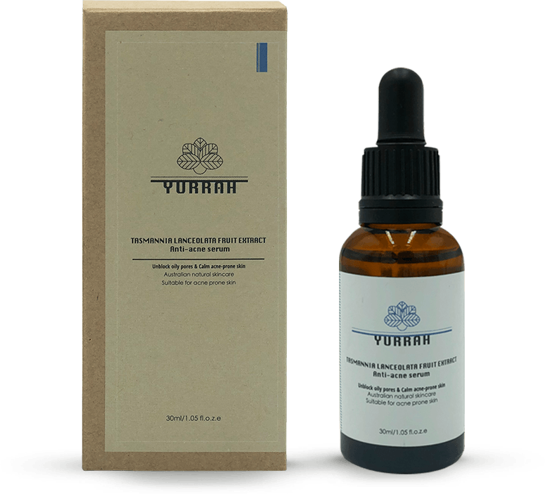
主要功效：
疏通油性毛孔、改善痘性肌肤
主要成分：
塔斯马尼亚杉果萃取、澳洲互叶白千层茶树油
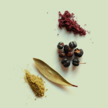
塔斯马尼亚衫果萃取：能够有效的修复痘痘性肌肤，舒缓和镇静被刺激的肌肤。
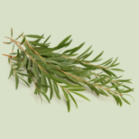
澳洲互叶白千层茶树油：天然安全的消炎剂，可帮助改善痘性肌肤，淡化痘印、杀菌消炎、收敛毛孔。
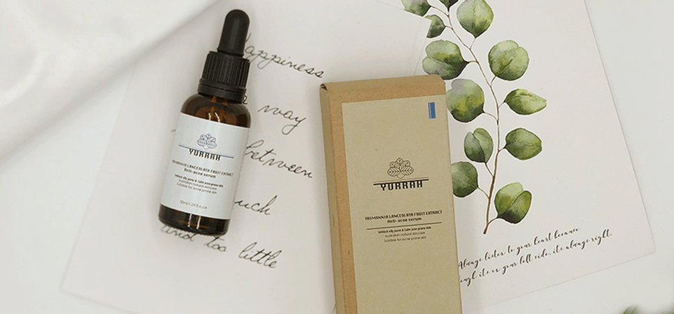

· 南极冰川天然泥萃取抗衰精华原液(30ml)
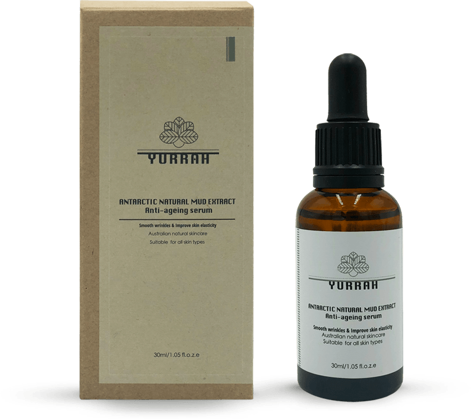
主要功效：
淡化皱纹、改善皮肤弹性
主要成分：
南极冰川天然泥萃取、澳洲天然蜂毒
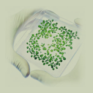
南极冰川天然泥萃取：从南极洲乔治国王岛发现的冰川泥中分离出来的菌的发酵萃取物，最珍贵的抗衰成分，能促进胶原蛋白和弹性蛋白产生。
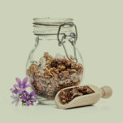
澳洲天然蜂毒：被誉为最天然的Botox（肉毒杆菌），最优质有效的抗皱成分。
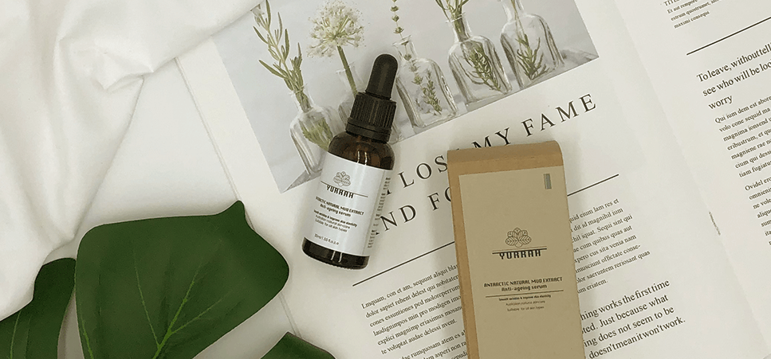
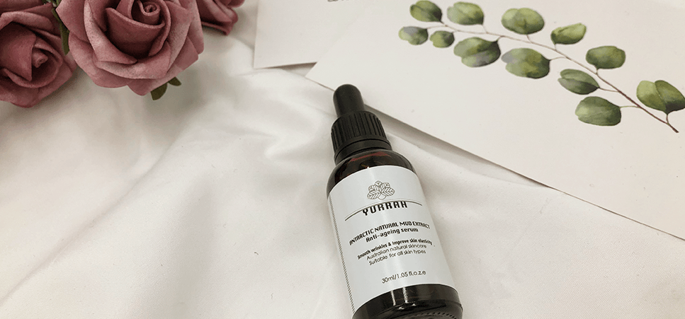
· 卡卡杜李美白精华原液(30ml)
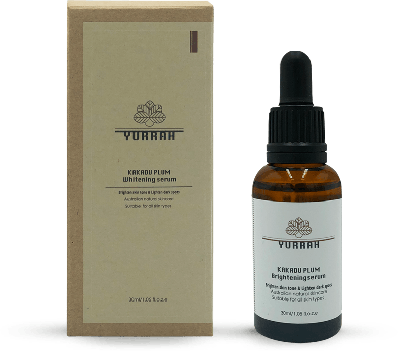
主要功效：
美白肌肤、淡化色斑
主要成分：
卡卡杜李萃取物、熊果叶萃取物
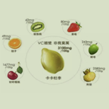
卡卡杜李萃取物：世界上VC含量最高的超级水果，是橘子VC的100倍！含大量多酚，拥有超强抗氧化成分。
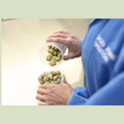
熊果叶萃取物： 阻止黑色素生成，有效减少肌肤色素沉着问题。
 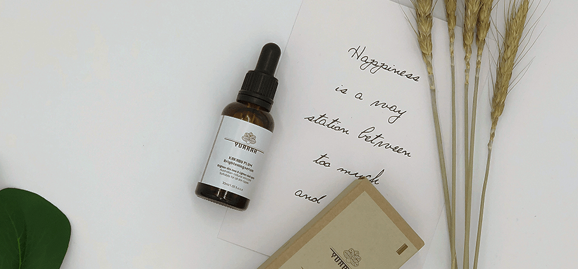
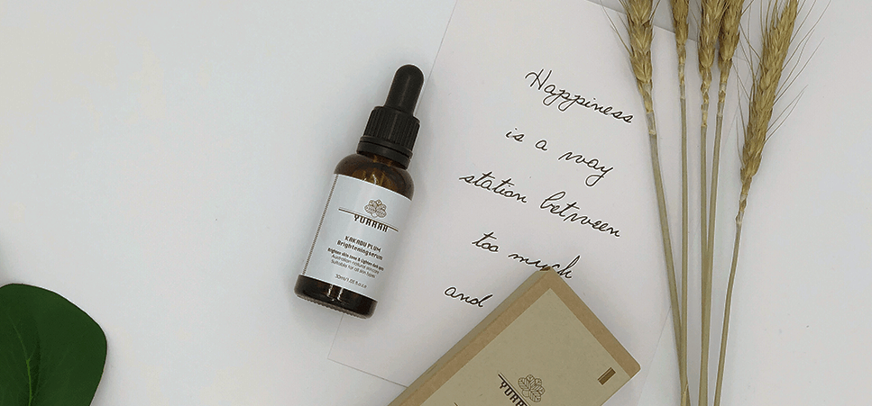